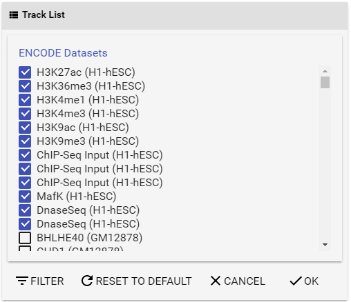
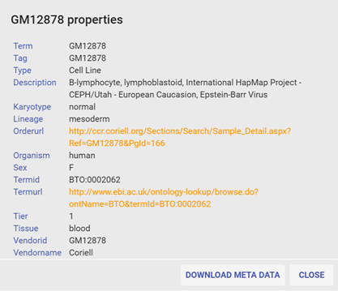
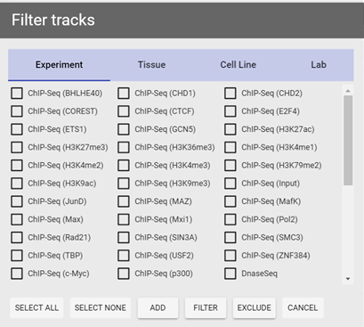
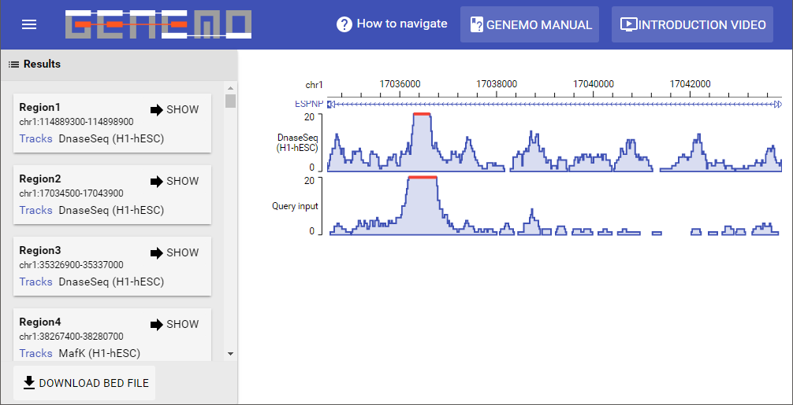
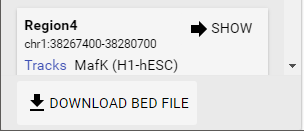

GeNemo Search Manual
GeNemo is a search engine for functional genomic data. GeNemo searches user-input data against online functional genomic datasets, including the entire collection of ENCODE and mouse ENCODE datasets. Unlike text-based search engines, GeNemo's searches are based on pattern matching of functional genomic regions. This distinguishes GeNemo from text or DNA sequence searches. The user can input any complete or partial functional genomic dataset, for example, a binding intensity file (bigWig) or a peak file. GeNemo reports any genomic regions, ranging from hundred bases to hundred thousand bases, from any of the online ENCODE datasets that share similar functional (binding, modification, accessibility) patterns. It is developed by the Zhong Lab in University of California, San Diego.
In GeNemo Search, you can easily search similar regions among Encyclopedia of DNA Elements (ENCODE) and mouseENCODE database entries in human or mouse, including chromatin accessibility, histone modification, transcription factor binding sites and DNase-seq peaks. Similar regions are defined as the region with a local maximum similarity value. Figure 1 below shows the results from GeNemo Search.

Figure 1 How GeNemo Search works. GeNemo Search can be used to find the similar regions between user input and all selected tracks. In this example, M tracks that may contain DNase-Seq, TFBS or histone modifications data are chosen, and K local similar regions are found in chromosome 1 in the result.
You can submit any peak or bigWig file from your experiment to search the ENCODE database for similar regions across the genome. This may help in finding genomic regions of interest, related epigenetic information or other insights for your research.
The gene track displaying mechanism in GeNemo Search is powered by GeNemo Browser.
So far two ref are supported in GeNemo Search:
ENCODE and mouseENCODE data are incorporated in GeNemo as epigenetic data sets for search and visualization to provide better insights from the vast amount data within the project.
To learn more about ENCODE and mouseENCODE, please check the following websites:
The GeNemo Search user interface contains several components: the Input file panel, the Results panel, and the GeNemo Browser. The Input file panel will be folded after data submission and can be called out with the button.
 Figure 2 Input file
Figure 2 Input file panel in GeNemo Search.
You need to use Input file panel to provide input data in GeNemo Search (see Figure 2 to the right). By specifying the following information, you can search the epigenetic data sets for regions similar to your experiment results:
- Choose a reference genome you would like to search against (human or mouse). This should be the ref used in your experiment.
- Provide a custom peak file or a bigWig file from your experiment. The custom peak file should be in a tab delimited text file, BED format or any format that has at least three columns: chromosome name, start position and end position. You need to choose one of the following ways to provide the file:
- Put your file on any online server and make it publicly accessible, providing the URL in URL for data file
- If you want to provide a peak file, you may also directly upload the file with Upload local file. BigWig files cannot be directly uploaded due to their size.
(Notice that if you choose one method, any input in the other method will be resetted to avoid interference and confusion. For example, if you upload a local file, URL for data file will be cleared.)
- You may also provide a bigWig file as input by specifying the URL of said bigWig file, GeNemo will try to determine file type by the extension of the file (.bw or .bigWig). Notice that bigWig files cannot be recognized when uploaded directly.
- (Optional) Provide your email address. If you have chosen a lot of tracks to search, it may take GeNemo Search dozens of minutes to more than one hour to finish the computation. If you have provided your email address, you will receive an email with a URL to visualize the results once the computation is complete.
- (Optional) If you specified a peak file and it comes from some analog data (in wig or bigWig format), you may provide a URL of the analog data file for display purposes in Display file URL. This file is used to provide better visualization results and will not be used in computation.
- (Optional) If you would like to limit the scope of your search to one specific genomic region instead of the full genome, you can specify the region in Search range. You can provide the region in several formats, such as chr1:1234567-4567890, chr1 1234567-4567890 or chr1 1234567 4567890.
- (Optional) Choose tracks/data you want to compare by clicking Data selection. (Please refer to the Choose epigenetic data sets to search section below.)
After provided the required information, click
Search to initialize your search.
GeNemo Search incorporated all data sets from ENCODE project as potential search targets. To choose the specific data sets you would like to search, you can click Data selection to open the Track list panel.

Figure 3 Track list panel.
(Currently unavailable due to site upgrade) By clicking on underlined sample name, meta data from ENCODE will be summarized in the popup window, by clicking the sample name again or click More Info... to show detailed meta data.

Figure 4 Meta data popup window. Meta data can be downloaded as text file with Download meta data button.(Currently unavailable due to site upgrade)
To select the specific data sets for comparison, you can use a combination of two methods:
- Select ENCODE data sets individually with the checkboxes in the list;
- Use the built-in filter (explained below).
Epigenetic signals in ES cells (H1 in human, E14 in mouse) are selected by default.
To filter data sets by specific criteria, click
filter to bring out the filter panel, in this panel you can specify what type of information to use (by experiment, by tissue type, by cell line, or by lab) through clicking on corresponding tab. After a tab is selected, you can perform one of the three operations on currently selected items:
- Add to current selection: tracks matching given criteria will be added to the current selection (tracks already selected will not be affected);
- Filter current selection: currently selected tracks will be deselected (filtered) if they do not match given criteria (unselected tracks will not be affected);
- Exclude from current selection: currently selected tracks will be deselected if they match given criteria (unselected tracks will not be affected).
You can also use Select all and select none to select all or deselect all criteria from the current page.
 
Figure 5 Filter panel. Two different types of criteria are shown (Experiment and Tissue).
The output includes the Results panel, and the GeNemo Browser (see Figure 6 below). After the calculation is complete, the resulting gene regions will be shown in the Results panel. The results will be ordered according to scores obtained by the algorithm. Users can also click on the sample in the results to show a popup window for its corresponding meta data. Select the
Show button for any one result to visualize it in the GeNemo Browser.
To navigate the GeNemo Browser, please use mouse to drag any track horizontally to move left/right. Move the mouse cursor onto the coordinates then use the mouse wheel to zoom in/out.
To start a new query, use the button in upper-left to call out the sidebar with input file panel and start over.

Figure 6 This example of the output shows the result from the input file. The Results Panel and the GeNemo Browser are shown.
By clicking
download BED File at the bottom of the Results panel, the output regions can be exported into a BED file to be used as input for other tools, such as GREAT (http://bejerano.stanford.edu/great/public/html/). The similarity score and the track(s) matching the corresponding region is included in the BED file for references.

Figure 7 The
download BED File button
This result file in BED format contains:
- A header line indicating the original data file;
- Following lines with search results, including:
- the chromosomal region (chromosome number, start position, end position) of a match,
- the similarity score for the region between the input and the target dataset,
- the list of target dataset(s)
An example of an exported BED file is shown below:
#sourceFile=http://www.genemo.org/sample/wgEncodeEM001954.txt
chr1 65224589 65232694 Score=2191.60;Tracks=DnaseSeq-ES-E14-UW-m
If you have any questions or comments regarding to GeNemo Search, you may contact us by sending an email to Xiaoyi Cao (x9cao at ucsd dot edu).
If you find GENEMO helpful in your project, please cite the following publication to support future development:
Zhang Y, Cao X, Zhong S. (2016) GeNemo: a search engine for web-based functional genomic data. Nucl. Acids Res. doi:10.1093/nar/gkw299
- ↑International Human Genome Sequencing Consortium (2001). Initial sequencing and analysis of the human genome. Nature, 409: 860-921.
- ↑Mouse Genome Sequencing Consortium (2002). Initial sequencing and comparative analysis of the mouse genome. Nature, 420, 520-562.